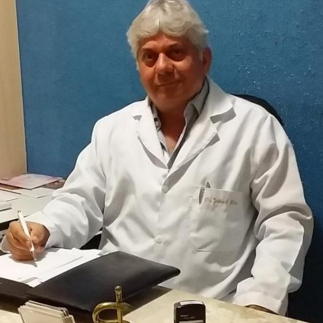
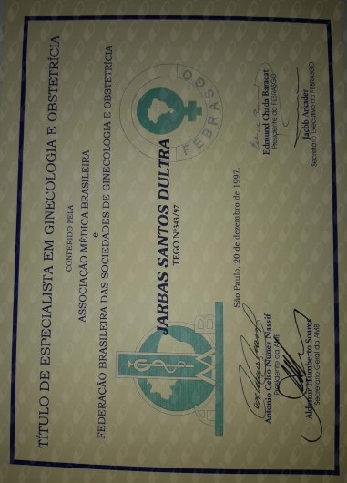
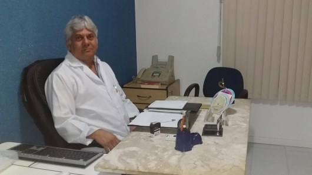

Início · Trajetória
Dr. Jarbas Santos Dultra, ginecologista e obstetra.
Formado pela Faculdade de Medicina da Bahia em 1984, com residência no Hospital Roberto Santos e título de especialista em Ginecologia e Obstetrícia (RQE 2315 · TEGO 343/1997). Cada informação desta página tem a fonte ao lado.
O médico
Quem é o Dr. Jarbas
Ginecologista e obstetra, o Dr. Jarbas atende no consultório da sala 410 do Centro Empresarial Itaigara Sul, em Salvador, e também por teleconsulta. Na Doctoralia, ele declara experiência em obstetrícia, uroginecologia, patologia cervical e perineoplastia.

1982 – 1984
Formação na Faculdade de Medicina da Bahia
O currículo que ele publicou na Doctoralia lista cada estágio da graduação, com local, período e carga horária. Formado pela Faculdade de Medicina da Bahia, da UFBA, em dezembro de 1984.
“Maternidade Tsylla Balbino, interno de Obstetrícia, aprovado em 1º lugar do concurso, com carga horária de 24 horas semanais, tendo obtido conceito ótimo, no período de Novembro de 1983 a Novembro de 1984”
Currículo do Dr. Jarbas na Doctoralia · ver a fonte
- Maternidade Climério de Oliveira: estágio de obstetrícia (1982).
- Camaçari: urgências e obstetrícia.
- Hospital Getúlio Vargas: urgências e banco de sangue, como interno concursado.
- Hospital Santa Isabel: ginecologia.
- Hospital Santo Antônio.
- Hospital Prof. Edgar Santos: planejamento familiar.
- Hospital do Servidor Municipal de Salvador: ambulatório de cirurgia ginecológica (1984).
1985 – 1997
Residência e títulos de especialista
- Residência em Tocoginecologia · 1985–1987Hospital Roberto Santos, de 1º de março de 1985 a 28 de fevereiro de 1987.
- Título pelo CRM · 1992Especialista em Ginecologia e Obstetrícia pelo Conselho Regional de Medicina, nº BA-002.315, em 12 de agosto de 1992 (RQE 2315).
- TEGO · 1997Título de Especialista em Ginecologia e Obstetrícia pela AMB e pela FEBRASGO, nº 343-97, em 20 de dezembro de 1997.

1996 – hoje
Consultório e hospital
Segundo a Receita Federal, o Dr. Jarbas é sócio-administrador, desde 12 de julho de 1996, da empresa do consultório que hoje funciona na sala 410 do Centro Empresarial Itaigara Sul. No CNES, o cadastro nacional dos estabelecimentos de saúde, ele aparece como ginecologista e obstetra do consultório desde julho de 2007, sem interrupção.
O mesmo histórico do CNES registra o Dr. Jarbas como ginecologista e obstetra do Hospital Espanhol, em Salvador, de julho de 2007 a abril de 2015.

Opiniões
303 opiniões
Na Doctoralia, o perfil do Dr. Jarbas tem 303 opiniões, com média 5 de 5, e o selo “Pacientes fiéis”, dado quando as pacientes voltam para outras consultas. Os temas mais citados são “Atencioso durante a consulta” e “Explicações detalhadas”. No Google, a nota é 5,0, com 27 avaliações.
“Dr. Jarbas me acompanha há anos e eu me sinto extremamente segura e cuidada com esse profissional tão competente e humano.”M. G., opinião na Doctoralia · jul/2026
Transparência
Como conferir
- Registro, títulos, formação e áreas (CRM-BA 7789 · RQE 2315 · TEGO 343/1997): perfil na Doctoralia.
- Vínculo atual de ginecologista e obstetra: CNES, competência 09/2026.
- Histórico de vínculos, inclusive o Hospital Espanhol: histórico profissional no CNES.
- Empresa do consultório, aberta em 12/07/1996: Receita Federal.
- Avaliações: Doctoralia e Google.
Dúvidas frequentes
Perguntas comuns
Qual é o registro do Dr. Jarbas?
CRM-BA 7789, RQE 2315 (Ginecologia e Obstetrícia) e TEGO 343/1997, segundo a Doctoralia.
Onde ele se formou?
Na Faculdade de Medicina da Bahia, da UFBA, em dezembro de 1984, com residência em Tocoginecologia no Hospital Roberto Santos, de 1985 a 1987.
Desde quando ele tem consultório?
Desde 1996: ele é sócio-administrador, desde 12/07/1996, da empresa do consultório, segundo a Receita Federal.
Agende
Uma consulta com o Dr. Jarbas, no Itaigara ou por teleconsulta.
Atendimento com hora marcada na sala 410 do Centro Empresarial Itaigara Sul. Fale pelo WhatsApp (71) 98628-9981 ou pelo telefone (71) 3358-5454.